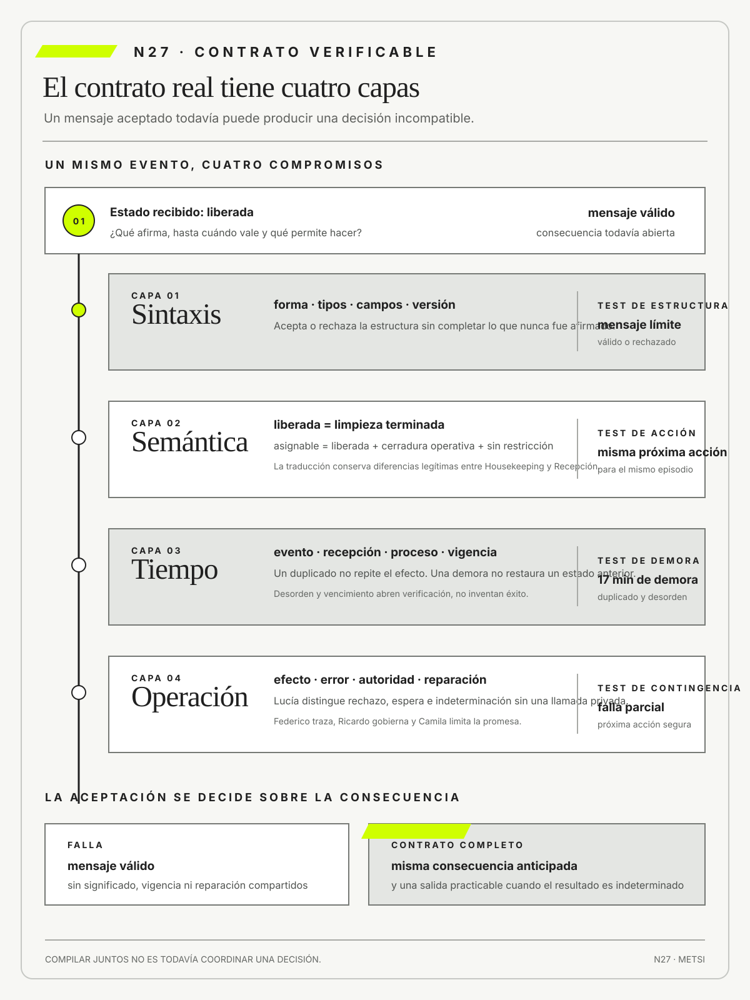

Roy T. Fielding
RFC 9110: HTTP SemanticsRFC Editor · 2022
Fundamenta las restricciones de REST y la semántica de las interacciones distribuidas más allá del formato de un mensaje.

Integrar exige compartir o traducir significado, vigencia, efecto y manejo de la indeterminación.
Contratos sintácticos, semánticos, temporales y operacionales
Ruta de lectura: problema, distinciones, decisiones, prueba, transferencia y preparación.

Nota. SIN NUM. identifica aparatos de orientación y referencia.
Seis referentes y las obras principales utilizadas para construir N27.
Fundamenta las restricciones de REST y la semántica de las interacciones distribuidas más allá del formato de un mensaje.

Conecta contratos de aplicación, transacciones y evolución de interfaces con consecuencias operativas.

Muestra que una frontera modular debe proteger decisiones de diseño y reducir el alcance de los cambios.

Establece bases para razonar sobre tiempo, orden causal y coordinación en sistemas distribuidos.

Expone los compromisos prácticos de consistencia, disponibilidad y evolución en servicios distribuidos.

Sistematiza transacciones, recuperación y garantías que permiten distinguir un mensaje recibido de una operación concluida.
N27 no resume estas fuentes ni las convierte en receta. Las pone en tensión para construir juicio profesional.
¿Qué debe acordarse para que dos partes no sólo intercambien datos válidos, sino que produzcan la misma consecuencia bajo tiempos y fallas reales?

Un contrato debe probarse sobre su consecuencia operacional y conservar quién puede detener y reparar.
Una universidad publica el resultado de una asignación de vacantes. El portal de ingreso envía una respuesta válida al sistema académico: identificador de estudiante, código de carrera, período y estado confirmed. La interfaz muestra “inscripción confirmada” y genera un comprobante. Dos días después, al intentar acceder al campus virtual, la estudiante descubre que no figura en la nómina y que el cupo ya fue ocupado.
El equipo técnico comprueba que la API respondió con éxito y que todos los campos respetaron el esquema. La primera explicación es una falla del consumidor: quizá descartó un mensaje. La segunda es temporal: la confirmación vencía si la documentación no era validada dentro de una ventana que el portal nunca mostró. La tercera es semántica: para Admisiones, confirmed significaba vacante reservada; para el sistema académico, significaba inscripción definitiva. Una cuarta explicación aparece cuando Operaciones reconstruye el trabajo: un rechazo podía revertirse, pero nadie había definido quién debía reparar el acceso y restaurar el cupo.
El caso no se resuelve agregando un campo ni publicando una descripción más extensa. Un contrato real abarca al menos cuatro capas. La capa sintáctica establece estructura, tipos y valores permitidos. La semántica define qué afirma cada estado y bajo qué condiciones. La dimensión temporal fija vigencia, orden, repetición y vencimiento. La operacional asigna efectos, errores, autoridad y reparación. Una coincidencia en la primera capa puede convivir con desacuerdos graves en las otras tres.
El equipo construye una línea temporal y encuentra dos mensajes idénticos enviados con la misma intención, pero con identificadores diferentes. También descubre que el sistema receptor responde “aceptado” antes de completar la inscripción. Esa respuesta sólo confirma recepción técnica, aunque el portal la interpreta como resultado de negocio. Cuando la validación posterior falla, el consumidor no recibe un evento de retractación y conserva una promesa que ya no puede sostenerse.
La discusión enfrenta dos diseños. Uno propone hacer sincrónico todo el recorrido para devolver una respuesta final. Reduce ciertos estados intermedios, pero acopla sistemas y puede dejar a miles de personas sin respuesta durante un pico. El otro conserva intercambio asincrónico y distingue recibido, reservado, validado, confirmado y rechazado. Exige más estados y una experiencia capaz de explicar espera, pero vuelve visible la incertidumbre y permite reparar.
La decisión provisional adopta el segundo diseño. Cada intención conserva una clave estable para impedir duplicados. La confirmación sólo se emite después de validar cupo y documentación. Las respuestas técnicas no se muestran como decisiones académicas. Todo rechazo incluye razón, autoridad, próxima acción y plazo; una retractación restituye cupo o crea una revisión visible. El equipo prueba duplicación, demora, desorden, vencimiento y cambio de versión, no sólo el camino feliz.
La estudiante recupera la vacante, pero ese resultado individual no cierra el contrato. Durante el siguiente período se observan inscripciones completas, retractaciones y reparaciones. Si dos áreas pueden leer el mismo mensaje y anticipar consecuencias distintas, el contrato sigue incompleto aunque la API sea válida y esté documentada.
N27 recibe de N26 dependencias críticas y transforma cada vínculo en un compromiso verificable. Su objetivo no es producir especificaciones más voluminosas, sino impedir que la interoperabilidad técnica oculte diferencias de significado, tiempo y autoridad que luego recaen sobre personas concretas.
HH-27 retoma una deuda declarada en HH-23 y situada dentro del ecosistema por HH-26. El corte de HH-23 había creado una proyección compuesta y provisoria para completar una llegada, sin cerrar el significado compartido. Ahora Mariela Benítez muestra que Housekeeping emite liberada cuando termina la limpieza; Lucía Ferreyra necesita además que la habitación esté asignable, que la cerradura responda y que no exista una restricción de mantenimiento. Federico Müller descubre que el mensaje es sintácticamente válido en todos los casos. El defecto pendiente está en el significado, el momento y la consecuencia que cada consumidor atribuye al mismo estado.

El equipo reúne mensajes del PMS, la bitácora de cerraduras, la planilla de Housekeeping y tres episodios de Recepción. Uno contiene un evento repetido, otro llega diecisiete minutos tarde y el tercero conserva el estado anterior después de una reasignación. Ricardo Sosa señala que un tiempo máximo de espera, o timeout, no puede decidir por sí solo si se entrega una llave. Camila Duarte advierte que la web ya promete disponibilidad inmediata, aun cuando la operación no dispone de esa garantía.
La ficha HH-27 define productor, consumidores, precondiciones, transición permitida, vigencia temporal, clave de idempotencia y contrato de error. La decisión es reservar liberada para limpieza terminada y crear asignable como estado operacional compuesto. Recepción sólo entrega cuando puede reconstruir las condiciones que lo produjeron. Ante duplicados mantiene una única transición; ante demora conserva el estado previo y abre una verificación visible, en vez de inventar éxito.
La medida se revisará tras treinta transiciones o ante una habitación entregada incorrectamente. Si el contrato reduce inconsistencias pero aumenta esperas sin explicación, no habrá cumplido su propósito. HH-28 usará esos mismos episodios para discutir qué evidencia de calidad alcanza cuando confiabilidad, desempeño, accesibilidad y capacidad de recuperación entran en tensión.
Dos sistemas no están integrados porque intercambien mensajes válidos. La integración comienza cuando productores, consumidores y operadores pueden anticipar o traducir de manera explícita significado, vigencia, efecto y manejo de la indeterminación. Un contrato completo relaciona estructura con precondiciones, estados, orden, errores, autoridad y reparación, y declara qué no garantiza. Si omite una de esas capas, puede superar validaciones automáticas y producir decisiones incompatibles ante demora, duplicación, evolución o falla parcial. Por eso el contrato debe probarse sobre consecuencias operacionales y poblaciones reales, conservar evidencia de la transición y permitir detener o reparar sin inventar que la incertidumbre nunca existió.
Un mensaje aceptado sólo constituye un contrato defendible cuando forma, significado, tiempo y operación permiten anticipar la misma consecuencia y una reparación practicable.

El mapa HH-26 mostró dependencias, fronteras de confianza y responsables, pero cada flecha todavía podía ocultar un desacuerdo. N27 toma esos vínculos y pregunta qué reciben realmente productor, consumidor y operación cuando circula un mensaje.
La progresión va de la dependencia reconocida al compromiso verificable. La forma del dato es sólo una capa: significado, vigencia, efecto, error y reparación deben permitir que las partes anticipen la misma consecuencia antes de discutir si la calidad alcanzada resulta suficiente.
Fielding, R. T., Nottingham, M. y Reschke, J. definen semántica, mensajes y comportamiento de HTTP.
OpenAPI Initiative estandariza descripciones legibles por personas y máquinas.
JSON Schema define vocabularios para describir y validar estructuras JSON.
Evans, E. vincula lenguaje compartido con modelos y fronteras de dominio.
Kleppmann, M. analiza tiempo, distribución, consistencia y fallas en sistemas de datos.
Hohpe, G. y Woolf, B. aportan patrones para explicitar canales, mensajes, correlación, idempotencia y manejo de errores dentro de contratos operacionales.
Fowler, M. aporta patrones para discutir integración y evolución sin reducirlas a conectividad.
AsyncAPI Initiative extiende contratos a interacciones asincrónicas y orientadas a eventos.
W3C Provenance Working Group fundamenta procedencia mediante entidades, actividades y agentes.
Fielding, R. T. muestra que una interfaz distribuida adquiere propiedades por sus restricciones y semántica de interacción, no por adoptar una etiqueta tecnológica.
Rose, S., Borchert, O., Mitchell, S. y Connelly, S. permiten definir identidad, autorización y evidencia de acceso como obligaciones verificables del contrato, y no como supuestos externos a la interfaz.
Pact Foundation prueba expectativas de consumidores contra productores.
Parnas, D. L. permite delimitar módulos por decisiones que conviene ocultar; Lamport, L. vuelve examinable el orden causal cuando no existe un reloj global; Vogels, W. explicita los compromisos de la consistencia eventual; Gray, J. aporta el vocabulario transaccional necesario para razonar sobre estados, fallas y recuperación.
Un contrato sintáctico define estructura, tipos, obligatoriedad y formato de un intercambio. Permite detectar mensajes incompletos o incompatibles antes de procesarlos, pero no garantiza que productor y consumidor compartan significado, oportunidad ni efecto.
En HH-27, una reserva debe declarar identificador, fecha, categoría y estado con tipos precisos. Esquemas, ejemplos válidos y casos que deben rechazarse forman una especificación ejecutable. La prueba conserva versión y consumidor, porque una estructura aceptada por un canal puede quebrar otro.
Dos mensajes sintácticamente válidos pueden inducir decisiones opuestas. Por eso el cierre no dice «la API funciona», sino qué formas se aceptan, cómo se versionan y qué ocurre con un mensaje dudoso. La sintaxis es una condición necesaria dentro de un contrato más amplio.
La precisión sintáctica evita trasladar ambigüedad a valores especiales. Un campo ausente no necesariamente equivale a cero, falso o desconocido; una fecha sin zona horaria no permite ordenar eventos entre sedes; un identificador libre puede perder ceros o cambiar de codificación. La ficha declara diferencias entre obligatorio, opcional y anulable, además de unidades, zonas horarias, cardinalidad y vocabularios permitidos. Los ejemplos incluyen límites y rechazos esperados, no sólo un mensaje ideal. Así, la validación detecta una incompatibilidad antes de que un consumidor complete silenciosamente lo que el productor nunca afirmó.
JSON Schema Draft 2020-12 permite expresar restricciones estructurales y OpenAPI 3.2.0 vincula esquemas con operaciones documentadas (JSON Schema, 2022; OpenAPI Initiative, 2025). Ninguno de los dos artefactos garantiza por sí mismo que liberada habilite la misma decisión para Housekeeping y Recepción. La ficha usa esas fuentes para anclar forma y ejemplos y reserva el acuerdo semántico para reglas, episodios y autoridad del dominio.
La prueba sintáctica se ejecuta sobre el artefacto que llegará a producción. Una especificación correcta no alcanza si el serializador emite otra estructura o una pasarela elimina campos. Se conservan versión, huella del esquema y muestra de intercambio para vincular el resultado con la liberación. Cuando el contrato cambia, una comparación identifica adiciones compatibles, restricciones nuevas y transformaciones que exigen migración. La decisión no es aprobar toda diferencia automática, sino distinguir qué variación puede consumir cada actor sin inventar valores.
Una API ofrece una frontera para que dos capacidades interactúen sin compartir toda su implementación. Su valor no reside en ocultar cualquier diferencia, sino en hacer explícitas las diferencias que el consumidor necesita conocer: operaciones disponibles, datos aceptados, resultados posibles, identidad, autoridad, versiones, límites y tratamiento de fallas. La interfaz es estable cuando conserva esas obligaciones relevantes, no cuando permanece inmóvil.
OpenAPI 3.2.0 permite describir interfaces HTTP mediante rutas, operaciones, parámetros, cuerpos, respuestas, seguridad y esquemas reutilizables. AsyncAPI 3.1.0 describe interacciones dirigidas por mensajes mediante canales, operaciones, mensajes y correlación. Los dos estándares producen artefactos que pueden revisarse y utilizarse para generar documentación, validadores o pruebas. Sin embargo, describir una interfaz no demuestra que la implementación respete el contrato ni que el contrato represente correctamente la decisión del dominio.
HH-27 distingue cuatro interacciones. Consultar disponibilidad solicita una representación sin autorizar una transición. Solicitar una reserva expresa un comando que puede aceptarse, rechazarse o quedar indeterminado. Informar que una habitación quedó lista publica un evento sobre algo que ocurrió. Autorizar una excepción crea una decisión institucional que no debería inferirse de un código técnico. Reunirlas bajo la etiqueta genérica API de reservas borraría diferencias de efecto, autoridad y reparación.
Cada interacción conserva una identidad de episodio. Una clave de idempotencia vincula reintentos del mismo comando; un identificador de correlación conecta la solicitud con respuestas y eventos posteriores; una versión evita que una escritura basada en un estado anterior revoque una decisión más reciente. Estos mecanismos no son equivalentes. La misma cadena puede implementarlos, pero la especificación debe decir qué relación prueba y durante cuánto tiempo se conserva.
El contrato de errores evita dos extremos: respuestas tan técnicas que la operación no puede actuar y categorías tan generales que ocultan estados distintos. HH-27 separa rechazo por regla, conflicto con una transición concurrente, demora, indisponibilidad e incertidumbre sobre el efecto. Para cada clase define una acción segura: corregir datos, volver a leer, reintentar con la misma identidad, escalar o detener. Un código de estado o una excepción de software es evidencia de una condición, no la decisión completa.
La evolución se examina desde consumidores concretos. Agregar un campo opcional puede ser compatible para un validador y quebrar una interfaz que rechaza propiedades desconocidas. Cambiar una enumeración puede conservar sintaxis y alterar una regla. Retirar una operación exige conocer quién la usa, qué alternativa existe y cuánto dura la convivencia. La política combina comparación de especificaciones, pruebas de contrato, telemetría de uso y fecha de retiro. Git puede conservar versiones del artefacto; no sustituye la investigación sobre sus consumidores.
La seguridad también forma parte del significado. Autenticar una aplicación no demuestra que la persona posea autoridad para ejecutar la acción. El contrato declara identidad, alcance, datos expuestos, propósito, registro de acceso y conducta ante autorización insuficiente. Los ejemplos no incluyen secretos ni datos personales reales. Una API correctamente protegida puede sostener una decisión ilegítima si la organización modeló mal la autoridad.
La prueba final atraviesa descripción, implementación y operación. Se valida la forma, se ejecutan ejemplos de éxito y error, se simulan duplicados y demoras, se comprueba la autorización y se observa la reparación. La evidencia se asocia con una versión desplegada. Así, OpenAPI y AsyncAPI dejan de ser catálogos decorativos y se convierten en partes examinables de un contrato que continúa siendo sintáctico, semántico, temporal y operacional.
Flores y Winograd permiten reconocer que una interfaz puede mediar actos que crean compromisos. Una solicitud, una promesa, una declaración de cumplimiento y una aceptación no son sinónimos de petición, respuesta y evento. El protocolo transporta expresiones; la organización define quién puede comprometerla, bajo qué condiciones y con qué posibilidad de cuestionamiento. En Hotel Horizonte, una respuesta exitosa del PMS puede afirmar que una reserva fue registrada sin prometer que una habitación adecuada estará disponible. El contrato evita que una confirmación técnica extienda su fuerza institucional sin evidencia ni autoridad.
Un contrato semántico acuerda qué significa cada dato, estado y transición en un contexto de decisión. No es un glosario aislado: vincula términos con reglas, autoridad, población y consecuencias observables.
Para Hotel Horizonte, «confirmada» debe distinguir mensaje recibido, pago autorizado y capacidad efectivamente reservada. Episodios límite y tablas de decisión revelan ambigüedades que una definición general no muestra. Lucía y Federico deben poder anticipar la misma próxima acción al leer el estado.
El significado cambia con contexto y necesita gobierno. Cada término conserva ejemplos positivos, contraejemplos, responsable y condición de revisión. Si la operación crea una excepción nueva, el contrato se actualiza sin reescribir retrospectivamente qué significaba el estado durante el episodio anterior.
Una definición semántica resulta útil cuando permite clasificar un episodio y anticipar una acción. «Disponible» puede referirse a inventario comercial, habitación limpia, cerradura operativa o capacidad de recibir a una persona con determinadas necesidades. El contrato indica cuál de esas afirmaciones expresa el campo, quién tiene autoridad para producirla y qué evidencia la respalda. También nombra lo que no afirma. Esta delimitación impide que un consumidor extienda el significado por conveniencia y permite que otra fuente contradiga el dato sin ser descartada como error técnico.
Las tablas de transición ayudan a verificar la semántica, pero no sustituyen la conversación con quienes usan los estados. Lucía aporta episodios en los que una categoría formal no alcanza; Mariela explica qué condición operacional todavía falta; Camila muestra cómo se comunica al mercado. El equipo conserva el desacuerdo hasta localizar el mecanismo. Después agrega un ejemplo, separa estados o limita el uso. La definición se considera estable sólo para una población y una decisión concretas, con una fecha de revisión ante nuevas excepciones.
Evans (2003) vincula lenguaje compartido y fronteras de dominio. N27 toma esa referencia de manera operacional: el vocabulario común debe permitir que dos actores anticipen la misma transición relevante, pero no obliga a borrar diferencias legítimas. liberada conserva el sentido de limpieza terminada en Housekeeping; asignable se crea para la condición compuesta que habilita la decisión de Recepción. La traducción entre ambos estados queda explícita y no se resuelve declarando sinónimos.
Un contrato temporal define ventanas, orden, vigencia, latencia y tratamiento de demora. No se reduce a un tiempo máximo de espera, conocido como timeout. Establece cuándo una afirmación puede usarse y qué decisión corresponde si llega tarde, duplicada o fuera de secuencia.
HH-27 prueba un estado de habitación que arriba después de una reasignación. Relojes, trazas y versiones permiten reconstruir qué sabía cada sistema al actuar. La regla distingue ausencia de respuesta, rechazo y resultado indeterminado para impedir que el vencimiento invente una certeza.
Los relojes no son perfectos y la operación necesita tolerancias explícitas. El contrato declara qué orden importa, cuánto dura una afirmación y cómo se reconcilian eventos atrasados. Esas condiciones se revisan con transiciones reales, no sólo con latencia promedio.
El análisis diferencia tiempo del evento, tiempo de recepción y tiempo de procesamiento. Una habitación puede haberse liberado a las 14.02, llegar al PMS a las 14.07 y ser procesada a las 14.09; usar sólo el último sello borra la demora que condicionó la decisión. Cuando no existe un reloj común, se preservan identificadores de secuencia y relaciones causales suficientes. La operación define qué comparación necesita exactitud y cuál admite una ventana. La meta no es ordenar universalmente todos los sucesos, sino evitar que una llegada tardía revoque una decisión más reciente.
Lamport (1978) muestra por qué el orden causal no se deduce de un reloj global perfecto en un sistema distribuido. HH-27 no intenta resolver sincronización en abstracto: exige identificador de intención, versión del estado, tiempo del evento y relación con la transición anterior cuando la decisión lo necesita. Un mensaje más reciente por hora de recepción no puede revocar automáticamente una reasignación causalmente posterior.
La vigencia también depende del propósito. Un estado puede servir para informar una estimación y no para entregar una llave. HH-27 asigna a cada afirmación un tiempo máximo y una conducta al vencimiento: volver a consultar, pasar a indeterminado, solicitar verificación humana o detener. El vencimiento no destruye el registro anterior, porque todavía puede explicar una acción. En la conciliación se compara lo conocido por cada actor en ese momento y se repara el estado sin acusar retrospectivamente a quien decidió con información válida pero incompleta.
Un contrato operacional define efectos, errores, observación, escalamiento y reparación alrededor de una interfaz. No es un SLA ni una página de soporte. Traduce comportamiento técnico en acciones posibles para quienes sostienen el servicio.
En HH-27, Recepción necesita saber cómo continuar cuando la confirmación queda indeterminada. La ficha especifica quién diagnostica, quién decide, qué evidencia recibe el turno y cómo se informa al huésped. Un error sin próxima acción segura deja la integración técnicamente descripta y operacionalmente incompleta.
El contrato se prueba con una falla parcial y con la ausencia de la persona experta. Si el procedimiento depende de conocimiento privado, no constituye una capacidad organizacional. El cierre exige una ruta ejecutable, autoridad identificada y señal de que la reparación produjo el efecto esperado.
El acuerdo operacional debe distinguir diagnóstico, decisión y comunicación. Tecnología puede localizar la causa sin tener autoridad para alojar al huésped; Recepción puede decidir una contingencia sin poder corregir el dato; Comercial debe detener una promesa que ya no puede cumplirse. La ficha relaciona cada clase de situación con un destinatario, una ventana y una primera acción segura. Esta distribución evita que una alerta general convoque a muchas personas y no habilite a ninguna. También protege al turno de recibir detalles técnicos que no modifican su decisión.
La reparación forma parte del contrato y no de una etapa posterior. Incluye reconciliar reservas, restituir capacidad, informar a la persona afectada y conservar evidencia del cambio. El equipo ensaya el procedimiento con herramientas y permisos reales. Si una instrucción indica modificar una tabla a la que el turno no accede o depende de un contacto disponible sólo en horario comercial, la prueba falla. El resultado esperado es una capacidad repetible, no la demostración heroica de que una persona experta puede resolver el caso.
Las precondiciones y poscondiciones declaran qué debe ser cierto antes y después de una operación. No son comentarios sobre el camino feliz: limitan estados válidos y vuelven comprobable el efecto prometido.


Para asignar una habitación, HH-27 exige disponibilidad vigente, restricciones satisfechas y autoridad. Después, la reserva debe quedar vinculada con la habitación y conservar trazabilidad. Pruebas de transición e invariantes verifican ambas condiciones, incluidos rechazo y resultado indeterminado.
La concurrencia puede invalidar una precondición entre lectura y escritura. Por eso la especificación incluye momento de evaluación, mecanismo de exclusión o compensación y evidencia persistida. La corrección se juzga sobre el estado material, no sobre la respuesta que vio un único componente.
Una precondición debe poder observarse con la información disponible para quien decide. Exigir «que no exista otra reserva concurrente» resulta inútil si ningún componente puede comprobarlo de forma atómica. El contrato traduce esa intención en un control implementable, como una versión esperada, una reserva temporal o una operación condicional. Si el control falla, la respuesta conserva qué condición dejó de cumplirse. Así el consumidor puede volver a leer o escalar sin repetir una acción cuyo efecto anterior sigue siendo desconocido.
Las poscondiciones abarcan efectos externos y obligaciones pendientes. Una respuesta exitosa puede haber asignado habitación sin emitir el aviso, actualizado el PMS sin la cerradura o iniciado un cobro todavía reversible. HH-27 enumera estados confirmados, efectos en curso y tareas de compensación. La prueba interrumpe la secuencia después de cada paso para observar qué queda. El contrato sólo promete aquello que puede demostrar en esos cortes; los demás resultados se expresan como pendientes o indeterminados en lugar de ocultarse detrás de un código de éxito.
Una invariante es una condición que debe preservarse a través de operaciones, versiones y fallas. Se diferencia de una preferencia porque violarla vuelve inaceptable el estado, aunque una métrica agregada mejore.
Una habitación accesible prometida no puede reasignarse sin decisión autorizada. HH-27 busca violaciones mediante secuencias concurrentes, reintentos y cambios de versión. El registro debe mostrar cuándo se evaluó la condición y quién pudo detener o reparar la transición.
Dos invariantes pueden entrar en tensión, por ejemplo continuidad de atención y protección de datos. La prioridad no se resuelve en el código: requiere decisión institucional, alcance y contingencia. El contrato conserva ese criterio para que la excepción no dependa del turno.
La formulación de una invariante necesita alcance y lenguaje comprobable. «Nunca perder una reserva» puede ser imposible frente a datos corruptos; «toda confirmación aceptada conserva un identificador, una fuente y una ruta de reparación» define una obligación verificable. El equipo busca secuencias mínimas que la rompan y registra si el defecto surge de la especificación, de una implementación o de una operación manual. Esa distinción orienta la corrección y evita declarar invariante una aspiración que nadie puede controlar.
Las pruebas basadas en propiedades complementan ejemplos conocidos al generar órdenes, duplicados y combinaciones no anticipadas. Sin embargo, una propiedad formalmente satisfecha puede proteger la condición equivocada. Lucía y Mariela revisan si la regla preserva la experiencia que se pretende sostener. Cuando dos invariantes chocan, Elena define prioridad, excepción autorizada y evidencia posterior. La decisión se registra porque el software sólo ejecutará una elección institucional que debe poder discutirse y revisarse.
La idempotencia permite repetir una operación sin multiplicar su efecto material. No exige respuestas textuales idénticas ni elimina el costo del reintento. Su propósito es preservar la consecuencia cuando la comunicación deja incierto el resultado anterior.
En HH-27, reenviar una confirmación no debe crear dos reservas ni duplicar un cobro. Claves, estados y deduplicación sostienen la garantía, que se prueba perdiendo respuestas y repitiendo mensajes. La evidencia incluye el estado final y los efectos externos.
La irreversibilidad no impide por sí sola un tratamiento idempotente. Una solicitud que produce un cobro o envía una orden irreversible puede aceptar reintentos sin repetir el efecto si conserva una identidad estable y deduplica dentro de una ventana adecuada. Cuando un efecto externo no puede controlarse o la ventana ya venció, hace falta conciliación y, si existe una acción legítima que compense la consecuencia, compensación. Gray, J. y Reuter, A. (1992) aportan el vocabulario transaccional para separar ejecución, recuperación y efectos; RFC 9110, sección 9.2.2, delimita la idempotencia de métodos HTTP (Fielding, Nottingham y Reschke, 2022).
La garantía requiere una identidad estable de la intención. Si cada reintento genera una clave nueva, el productor no puede distinguir repetición de otra solicitud legítima. El contrato define quién crea la clave, cuánto tiempo conserva deduplicación y qué respuesta recibe el consumidor ante una repetición. Esa ventana debe cubrir demoras reales y no sólo el tiempo habitual. También se decide qué ocurre cuando dos solicitudes iguales son en verdad decisiones distintas, para que la deduplicación no elimine una acción válida.
Los efectos laterales se revisan por separado. Una asignación puede ser idempotente en el PMS y duplicar un correo, un cobro o una orden a cerraduras. HH-27 sigue la misma intención a través de sus participantes y comprueba el estado final en cada uno. Cuando la coordinación no admite atomicidad, se definen compensaciones y señales de conciliación. El término idempotente no se usa como garantía absoluta del recorrido; describe una propiedad precisa de una operación bajo condiciones y ventanas declaradas.
Un contrato de error clasifica fallas, incertidumbre y respuestas que productores, consumidores y operación pueden manejar. No es una lista genérica de códigos: distingue rechazo, demora, duplicación, resultado indeterminado y degradación.
El PMS debe informar si la reserva fue rechazada o si todavía se desconoce el estado. HH-27 asocia cada clase con una acción segura, evidencia mínima y autoridad de escalamiento. Pruebas negativas verifican que un consumidor no interprete silencio como éxito ni como fracaso definitivo.
El detalle necesita equilibrio. Un mensaje opaco impide reparar; uno excesivo puede exponer información o acoplar consumidores a la implementación. El contrato publica lo necesario para decidir y conserva trazas protegidas para investigar sin trasladar el riesgo a quien espera.
La taxonomía separa condiciones permanentes, transitorias e indeterminadas. Las primeras suelen exigir corregir la solicitud; las segundas pueden admitir espera o reintento; las terceras obligan a consultar el estado antes de actuar otra vez. Esa clasificación no se deriva sólo del código numérico. Incluye si el efecto pudo ocurrir, cuándo conviene volver a intentar y qué autoridad puede resolver. Un consumidor que recibe «error» sin estas dimensiones queda forzado a adivinar, y cada adivinación se convierte en una nueva fuente de inconsistencia.
El mensaje dirigido a la operación traduce la clase técnica sin prometer una causa no demostrada. «No se pudo confirmar» conserva incertidumbre; «reserva inexistente» afirma un hecho más fuerte. HH-27 prueba qué ve Lucía y qué decisión toma con cada mensaje. Federico conserva detalles protegidos para investigar y correlacionar. Si la interfaz induce a repetir una operación peligrosa o a negar una reserva válida, el contrato de error falló aunque el registro técnico contenga información suficiente.
La evolución compatible permite cambiar un contrato sin quebrar consumidores existentes ni congelar el servicio. No se resuelve incrementando un número de versión. Requiere declarar qué se conserva, qué se depreca y durante cuánto tiempo convivirán interpretaciones.
HH-27 incorpora un estado nuevo mientras algunos canales sólo comprenden el vocabulario anterior. Pruebas con consumidores reales y telemetría de uso muestran quién sigue expuesto. La migración tiene responsable, fecha y condición de retiro, además de una traducción segura durante la convivencia.
Mantener compatibilidad indefinida acumula complejidad y puede impedir una mejora necesaria. El gobierno compara costo de migración, riesgo de ruptura y valor del cambio. El cierre ocurre cuando la evidencia demuestra adopción suficiente y existe reparación para quien todavía envíe una versión antigua.
La compatibilidad se evalúa por comportamiento y no sólo por lectura del esquema. Agregar un estado puede ser sintácticamente aditivo y quebrar un consumidor que trata todo valor desconocido como error. Cambiar una regla de orden puede conservar campos y producir otro efecto. El equipo construye una matriz de consumidores, supuestos y versiones observadas. Las pruebas se ejecutan con muestras reales y la telemetría muestra qué variante sigue activa. Así la decisión de retirar no depende de que todos declaren haber migrado.
Una estrategia de evolución incluye aviso, período de convivencia, traducción, soporte y salida. Cada excepción tiene fecha y responsable; de otro modo la compatibilidad se convierte en deuda permanente. Para un consumidor que no puede actualizarse, el hotel puede mantener un adaptador limitado o restringir la capacidad ofrecida. La elección se compara con el daño y el costo de sostener dos significados. Retirar una versión es una decisión operacional que necesita evidencia de uso y contingencia, no un acto administrativo del productor.
Un contrato de datos acuerda significado, calidad, responsabilidad, privacidad y cambio de un producto de datos. No es sólo un esquema de tabla ni un acuerdo entre equipos técnicos. Explica qué usos habilita una observación y qué límites conserva.
La disponibilidad de habitación registra fuente, frescura, reglas de corrección y población. HH-27 sigue su linaje desde Housekeeping hasta el canal y contrasta consultas reales. Un valor estructuralmente válido puede ser inadecuado si perdió vigencia o si omite una restricción relevante.
El contrato también hace visible quién corrige y quién responde por el uso. Puede formalizar una definición injusta si ninguna persona afectada interviene en su revisión. Por eso combina controles automáticos con episodios, consecuencias y una regla de cambio verificable.
Los compromisos de calidad se vinculan con usos declarados. Completitud, oportunidad o exactitud no tienen un umbral universal: una ausencia tolerable para análisis mensual puede impedir entregar una habitación. La ficha registra población, cálculo, ventana y acción ante incumplimiento. Los productores no prometen aquello que no observan, y los consumidores no reutilizan el dato para decisiones no evaluadas. Cuando aparece un nuevo uso, se reabre el contrato en lugar de asumir que la disponibilidad técnica equivale a aptitud.
El linaje permite localizar dónde cambió una afirmación y quién puede corregirla. HH-27 conserva fuente original, transformaciones, reglas manuales y momento de cada versión. Si un valor se deriva, el contrato expresa qué parte es observación y qué parte es inferencia. Esta separación es esencial para disputar un resultado y para cumplir una rectificación. La responsabilidad asignada incluye capacidad de modificar el dato, notificar consumidores y verificar que la corrección llegó a las copias relevantes.
El modelo PROV de W3C distingue entidades, actividades y agentes y ofrece un anclaje para registrar procedencia sin prescribir el dominio (W3C Provenance Working Group, 2013). En HH-27, la observación material de Housekeeping, la regla que calcula asignable y el actor que autoriza una corrección quedan relacionados. Esa procedencia permite explicar por qué un estado cambió y localizar qué consumidores recibieron la versión anterior.
Un contrato de seguridad define identidad, autorización, confidencialidad, integridad y evidencia de acceso. No consiste en agregar autenticación al final. Distribuye controles según fronteras de confianza, propósito y daño posible.
El canal puede consultar una categoría sin acceder a datos innecesarios del huésped. HH-27 prueba permisos mínimos, intentos indebidos, trazabilidad y revocación. También verifica la contingencia, porque un control que bloquea toda atención durante una falla puede producir otro daño.
Seguridad, continuidad y accesibilidad pueden entrar en tensión. La decisión debe declarar qué riesgo se acepta, quién lo autoriza y qué señal obliga a revisar. El contrato protege tanto la información como la posibilidad de explicar y reparar una acción.
Autenticar un sistema no autoriza todos sus usos. El contrato relaciona identidad con propósito, operación, población y campos mínimos. Un canal autenticado puede consultar disponibilidad agregada sin recibir notas sensibles de accesibilidad. La decisión se aplica en cada frontera y se prueba con identidades válidas que intentan acciones fuera de alcance. Este escenario detecta permisos excesivos que una prueba de credenciales correctas no revela. También se comprueba revocación, porque retirar acceso tarde puede prolongar un daño después del cambio contractual.
La evidencia de seguridad debe ser suficiente para investigar sin convertirse en otra exposición. Se registra quién solicitó, qué regla autorizó, qué versión respondió y qué campos fueron afectados, con retención y acceso acordes al riesgo. Durante una contingencia, los permisos excepcionales tienen duración, justificación y reconciliación posterior. Si el modo degradado exige compartir cuentas o exportar datos innecesarios, no es una alternativa segura. El contrato obliga a diseñar continuidad y protección como una misma decisión.
Una prueba de contrato verifica acuerdos relevantes desde las perspectivas del productor, el consumidor y la operación. No reemplaza pruebas de punta a punta ni evidencia del resultado observable; localiza incompatibilidades antes de exponer el recorrido completo.
En HH-27, el consumidor publica expectativas y el productor las ejecuta antes de desplegar. La suite cubre estructura, significado, orden, duplicados, demora, errores, permisos y versiones. Cada resultado conserva la especificación y el artefacto que efectivamente se probó.
Una suite verde puede omitir contratos humanos, temporales o regulatorios. Por eso se complementa con una transición realista y una persona de turno que interpreta el resultado. La prueba aporta confianza cuando discrimina una falla relevante y habilita una decisión concreta, no cuando sólo aumenta cobertura.
Las pruebas se distribuyen por alcance. Un esquema valida forma; una prueba de productor confirma comportamiento local; una expectativa del consumidor verifica el uso que realmente realiza; una prueba operacional observa interpretación y reparación. Ningún nivel reemplaza al siguiente. Si todas las combinaciones se trasladan a una prueba integral, el diagnóstico se vuelve lento y frágil; si sólo se prueban componentes, la promesa queda sin evidencia. La estrategia elige el nivel más pequeño capaz de detectar cada incumplimiento y conserva algunos escenarios completos para verificar la cadena.
Una expectativa del consumidor también puede estar equivocada o exigir una implementación particular. El gobierno revisa si expresa una necesidad legítima y una consecuencia, no si coincide con el código actual. Productor y consumidor negocian el contrato con Operaciones cuando la diferencia afecta el turno. Cada falla indica qué acuerdo se rompió y bloquea sólo el cambio pertinente. La prueba deja de ser un rito de integración y se convierte en un mecanismo de coordinación que hace visible el costo de evolucionar.
Pact documenta pruebas dirigidas por expectativas de consumidores y resulta pertinente para verificar compatibilidad observable entre productor y consumidor (Pact Foundation, 2026). N27 limita su alcance: una expectativa ejecutable puede comprobar formato y comportamiento acordado, pero no reemplaza la decisión institucional sobre significado, privacidad o reparación. AsyncAPI 3.1.0 aporta una descripción actual de interacciones asincrónicas; la ficha agrega orden, vigencia e indeterminación porque un documento de interfaz no decide por sí solo qué debe hacer el turno.
HH-27 vuelve verificable un intercambio desde la intención hasta la reparación. La ficha se completa entre productor, consumidor y operación; ningún equipo puede declarar unilateralmente que el contrato está cerrado.
La ficha se prueba enviando dos veces la misma reserva y retrasando la confirmación hasta después del cambio de turno. El contrato sólo es defendible si el segundo consumo no duplica la habitación y si Lucía puede distinguir demora de rechazo.
El instrumento se completa desde un episodio y no desde la documentación existente. Primero se identifica qué decisión produjo el intercambio y qué consecuencia tuvo; después se reconstruyen forma, significado, temporalidad y efecto. Ese orden evita formalizar una interfaz que nadie necesita o legitimar como contrato una práctica accidental. Cada campo señala evidencia y una persona capaz de revisarla. Las contradicciones no se resuelven con una definición de compromiso: se prueban mediante transiciones y permanecen abiertas si falta autoridad para elegir.
La versión final vincula especificación, pruebas y procedimiento operacional. Una modificación semántica debe reflejarse en los casos ejecutables, en el mensaje que recibe el turno y en la regla de conciliación. Si alguno conserva el acuerdo anterior, la migración no terminó. Ricardo aprueba el cierre cuando un consumidor antiguo, uno actualizado y una persona de Recepción pueden actuar sin producir estados incompatibles. La ficha incluye fecha de revisión porque nuevos episodios pueden mostrar un supuesto que ningún ejemplo inicial había representado.
La versión completada de HH-27 define al productor como Housekeeping y al PMS como responsable de derivar la condición compuesta. Los consumidores son Recepción, el canal comercial y cerraduras. liberada afirma únicamente limpieza terminada, con identificador de habitación, fuente, versión y tiempo del evento. asignable afirma que existe reserva compatible, condición material vigente, cerradura operativa y ausencia de bloqueo de mantenimiento para una decisión de ingreso determinada. No afirma que el huésped ya recibió la habitación ni que cualquier canal pueda prometer disponibilidad futura.
La transición hacia asignable requiere las cuatro precondiciones y deja como poscondición una decisión reconstruible. La invariante impide asignar simultáneamente una habitación a dos reservas y prohíbe perder una restricción accesible. La vigencia termina ante reasignación, bloqueo de mantenimiento o cambio material informado por Housekeeping. Un mensaje tardío no restaura el estado anterior; abre conciliación. Un duplicado con la misma identidad no repite asignación, correo, cobro ni orden de cerradura. Un resultado indeterminado mantiene el estado previo y ofrece al turno una acción segura.
La evolución convive durante treinta transiciones con consumidores antiguos. Un adaptador traduce asignable a la señal anterior sólo para usos que no amplían significado; el canal que interpreta todo valor desconocido como error recibe una versión controlada y una fecha de migración. La prueba ejecuta mensaje válido, campo ausente, duplicado, inversión de orden, demora de diecisiete minutos, revocación de permiso y ausencia de Federico. Cada resultado vincula versión de OpenAPI o AsyncAPI, esquema JSON, expectativa del consumidor, traza de procedencia y procedimiento operacional. El cierre exige que Lucía distinga rechazo, demora e indeterminación sin llamada privada.
Este artefacto resuelve la continuidad del caso. HH-23 había usado una proyección local para aprender sin bloquear el corte; HH-27 establece ahora nombres, productores, consumidores, temporalidad, invariantes, errores y migración comunes. La diferencia entre ambos pasos queda preservada como decisión: una solución provisoria puede habilitar evidencia limitada, pero no se convierte en contrato institucional hasta que quienes producen, consumen y reparan pueden verificar la misma consecuencia.
Un laboratorio externo envía resultados a una historia clínica. El esquema es válido, pero urgente, preliminar y corregido no significan lo mismo para todos los actores.
El contrato incorpora significado, orden, vigencia, confirmación, corrección y escalamiento clínico. Una prueba técnica no reemplaza la responsabilidad profesional sobre el resultado.
Una corrección recibida después de una decisión clínica no borra el valor anterior. El sistema conserva ambas versiones, identifica cuál vio cada profesional y activa una comunicación proporcional al daño posible. Si «preliminar» se muestra con el mismo tratamiento que «validado», la sintaxis puede ser perfecta y la interfaz inducir una decisión equivocada. La prueba incluye un resultado urgente tardío, una corrección y la ausencia del profesional solicitante para verificar que significado, tiempo y escalamiento forman un único compromiso operacional.
HH-27 permite separar interoperabilidad estructural de interoperabilidad operativa.
Una organización publica OpenAPI, genera clientes y declara resuelta la integración.
Los campos validan, pero nadie acuerda significado, orden, resultado indeterminado ni reparación. La documentación describe la superficie y no el compromiso.
El contrato se completa cuando una falla puede interpretarse y tratarse sin improvisación.
La prueba envía una reserva válida, duplica el mensaje, invierte el orden de dos transiciones y demora la confirmación hasta el turno siguiente. Productor y consumidor deben acordar no sólo qué estructura aceptan, sino qué estado queda y qué acción corresponde en cada resultado.
Lucía intenta entregar la habitación mientras Federico observa trazas y Ricardo evalúa la continuidad operacional. La prueba verifica que un tiempo de espera agotado no se convierta en rechazo, que el reintento no duplique capacidad y que una versión nueva conviva con la anterior durante la migración.
N27 aprueba cuando la operación puede distinguir error, espera e indeterminación y puede reconciliar sin inventar el significado. Una API documentada que deja esa decisión en una llamada privada no constituye un contrato completo.

Formalizar un contrato reduce ambigüedad, pero también puede congelar un significado inadecuado o imponer al consumidor el costo de evolución.
Dos sistemas pueden validar el mismo JSON y asignar consecuencias distintas a «confirmada». La conformidad estructural es necesaria, pero no prueba un entendimiento común.
Una lista de estados no explica quién puede moverlos, desde dónde ni con qué efecto. El contrato debe impedir transiciones imposibles y hacer visibles las indeterminadas.
Un mensaje correcto que llega tarde puede invalidar una decisión ya ejecutada. La ventana temporal y el orden forman parte del significado operacional.
El vencimiento sólo indica ausencia de respuesta a tiempo, no rechazo ni éxito. Traducirlo automáticamente a una decisión crea estados falsos difíciles de reconciliar.
Repetir una operación después de una respuesta perdida puede cobrar, reservar o notificar dos veces. El consumidor necesita una clave y una garantía verificable.
«Falló» no permite distinguir rechazo, espera, reintento o escalamiento. Los errores deben expresar estado conocido y próxima acción segura.
Publicar una versión nueva sin período de convivencia traslada la coordinación a cada consumidor. La evolución requiere compatibilidad, migración observada y fecha de retiro.
Un contrato puede funcionar porque Lucía corrige a mano los mensajes dudosos. Si esa intervención no se registra, la interfaz parece más confiable de lo que es.
La conformidad ordinaria no revela duplicados, demora, caída parcial ni cambio de versión. Esos escenarios prueban las garantías que más necesita la operación.
Una ontología no resuelve desacuerdos si quienes deciden y reparan no participaron. El significado se sostiene en prácticas, autoridad y consecuencias compartidas.

N27 convierte una interfaz en compromiso verificable entre productores, consumidores y operación. La competencia profesional no se agota en publicar un esquema: incluye acordar significado, tiempo, efecto, error, evolución y reparación.
Esta competencia obliga a diseñar desde el consumidor real. Una respuesta válida para el productor puede llegar tarde, duplicarse o carecer del estado que el turno necesita para decidir. El análisis recorre la cadena completa y pregunta qué interpretación hará cada participante bajo condiciones ordinarias y adversas. En HH-27, el valor liberada no se aprueba hasta que Housekeeping, PMS, cerraduras y Recepción puedan reconocer el mismo compromiso o traducir explícitamente sus diferencias. La semántica se prueba mediante decisiones, no mediante definiciones aisladas.
Los contratos también vuelven visible el costo del cambio. Agregar un campo opcional puede parecer compatible y, sin embargo, alterar una regla de negocio, una firma o una expectativa temporal. La evolución responsable identifica consumidores, versiones y ventanas, mantiene traducciones seguras y conserva evidencia de quién sigue expuesto. Retirar la versión anterior es una decisión operacional que requiere telemetría y autoridad. Si un consumidor desconocido todavía actúa sobre el contrato viejo, declarar finalizada la migración sólo desplaza el incidente.
La prueba deja de ser una actividad exclusivamente técnica. Operaciones aporta estados posibles, Recepción muestra decisiones bajo presión y las personas afectadas permiten verificar si el resultado conserva la promesa. Un simulador puede validar formato y secuencia; un episodio real revela autoridad, excepción y reparación. La combinación evita dos falsos positivos: una interfaz que compila pero no coordina significado y una práctica manual que oculta la incompatibilidad mientras una persona experta permanece disponible.
Formalizar un contrato reduce ambigüedad, pero también puede congelar un significado inadecuado o imponer al consumidor el costo de evolución. Los acuerdos se revisan cuando cambian prácticas, poblaciones o consecuencias, aun si la interfaz mantiene compatibilidad técnica.
No toda relación necesita el mismo grado de formalidad. Un intercambio exploratorio, reversible y de bajo impacto puede comenzar con ejemplos y observación; una decisión financiera, clínica o de acceso requiere invariantes explícitas, procedencia y manejo de indeterminación. Sobredocumentar una conexión menor puede distraer de contratos críticos, mientras dejar implícita una obligación severa vuelve imposible atribuir responsabilidad. La proporcionalidad se justifica por consecuencia, frecuencia de cambio y dificultad de reparación, no por prestigio de la tecnología utilizada.
La consistencia presenta una tensión particular. Exigir sincronía total puede reducir disponibilidad y aumentar fragilidad; aceptar estados temporales distintos puede confundir una promesa irreversible. El contrato debe nombrar qué discrepancias son tolerables, durante cuánto tiempo y para qué decisiones. En el hotel, inventario y limpieza pueden converger, pero una llave no debe emitirse mientras la autoridad permanezca indeterminada. El criterio no es uniformidad absoluta, sino preservar invariantes capaces de proteger a la persona durante la transición.
La reparación atraviesa fronteras organizacionales. Un productor puede corregir su dato sin deshacer una decisión que el consumidor ya tomó. Por eso el acuerdo incluye identificadores, trazas, compensaciones y comunicación, además del mensaje correcto. Cuando no se sabe si una operación ocurrió, repetir sin idempotencia puede duplicar un cargo y asumir éxito puede abandonar al huésped. Un estado explícito de indeterminación permite detener, investigar y resolver. Negar esa posibilidad sólo la traslada al trabajo informal de quienes atienden la excepción.
Finalmente, el lenguaje compartido nunca queda cerrado de una vez. Nuevos productos, regulaciones y prácticas crean casos que los términos originales no anticiparon. La gobernanza semántica conserva ejemplos, decisiones y fecha, y distingue cambiar una definición de corregir un dato. Una versión nueva no reescribe el significado histórico, porque hacerlo impediría comprender incidentes anteriores. Aprender exige saber con qué contrato actuó cada participante y cómo la organización transformó ese acuerdo después de observar sus límites.
Un contrato verificable delimita comportamiento, pero no decide por sí solo si ese comportamiento ofrece calidad suficiente para todas las poblaciones y consecuencias. N28 transformará las garantías de N27 en escenarios, riesgos, atributos y evidencia de aceptación.
Un contrato completo define qué puede circular, qué significa, cuándo sigue vigente y qué ocurre cuando no puede cumplirse. Cada dimensión impide convertir una respuesta técnica en una falsa promesa operacional.
La prueba del acuerdo no es que ambos extremos compilen, sino que puedan manejar duplicados, demora, indeterminación y cambio sin perder invariantes ni capacidad de reparación.
Un contrato defendible une especificación y práctica. Define mensajes y estados, pero también quién puede interpretar una excepción, qué evidencia queda y cómo se corrige una consecuencia. Su prueba más exigente combina una versión anterior, demora, repetición y una persona que necesita decidir antes de que el sistema converja. Si productor y consumidor preservan el invariante y la operación puede reconocer la indeterminación, el acuerdo coordina. Si el éxito depende de que alguien conozca una convención no escrita, existe conocimiento local y no contrato. El objetivo no es eliminar toda ambigüedad futura, sino volverla localizable, discutible y reparable antes de que una diferencia semántica se convierta en una promesa falsa.

Contrato sintáctico: un contrato sintáctico define estructura, tipos, obligatoriedad y formato de un intercambio.
Contrato semántico: un contrato semántico acuerda qué significa cada dato, estado y transición en un contexto de decisión.
Contrato temporal: un contrato temporal define ventanas, orden, vigencia, latencia y tratamiento de demora.
Contrato operacional: un contrato operacional define efectos, errores, escalamiento, observación y reparación alrededor de una interfaz.
Precondición y poscondición: precondición y poscondición declaran qué debe ser cierto antes y después de una operación.
Invariante: una invariante es una condición que debe preservarse a través de operaciones y fallas.
Idempotencia: idempotencia permite repetir una operación sin multiplicar su efecto material.
Contrato de error: un contrato de error clasifica fallas, incertidumbre y respuestas que productores y consumidores pueden manejar.
Evolución compatible: evolución compatible permite cambiar un contrato sin quebrar consumidores existentes ni congelar el servicio.
Contrato de datos: un contrato de datos acuerda significado, calidad, responsabilidad, privacidad y cambio de un producto de datos.
Contrato de seguridad: un contrato de seguridad define identidad, autorización, confidencialidad, integridad y evidencia de acceso.
Prueba de contrato: una prueba de contrato verifica acuerdos relevantes desde la perspectiva del productor, del consumidor y de la operación.
Para el encuentro, elegir un intercambio real o utilizar el contrato asignable completado en HH-27. Revisar sintaxis, semántica, temporalidad y error, y preparar un caso duplicado o tardío que permita comprobar la garantía operacional.